How to Pentest Firmware: Extraction, Binary Analysis, and Disclosure
A start-to-finish methodology and learning roadmap for finding valid vulnerabilities in firmware: what to study, how to extract and analyze the binary, and how to get to a defensible PoC and disclosure.
How to use this
Every valid bug is the same shape: attacker-controlled input reaches a dangerous operation, across a trust boundary, with no adequate check in between. Source code or a stripped MIPS binary, the shape does not change. Only how much work it takes to see it does. The phases below are that shape turned into a process: extract the firmware, map where untrusted data enters, find the dangerous operations (static), prove input can reach them (dynamic and fuzzing), then kill false positives until what remains crosses a real boundary. Work it top to bottom the first few times; later you'll skip around, but every finding still has to close the loop of reachable source, unsanitized path, dangerous sink, real impact. Read the foundations section as a checklist of what to go learn when a phase stalls on something you don't yet understand. That gap is usually the actual blocker, not the tooling.
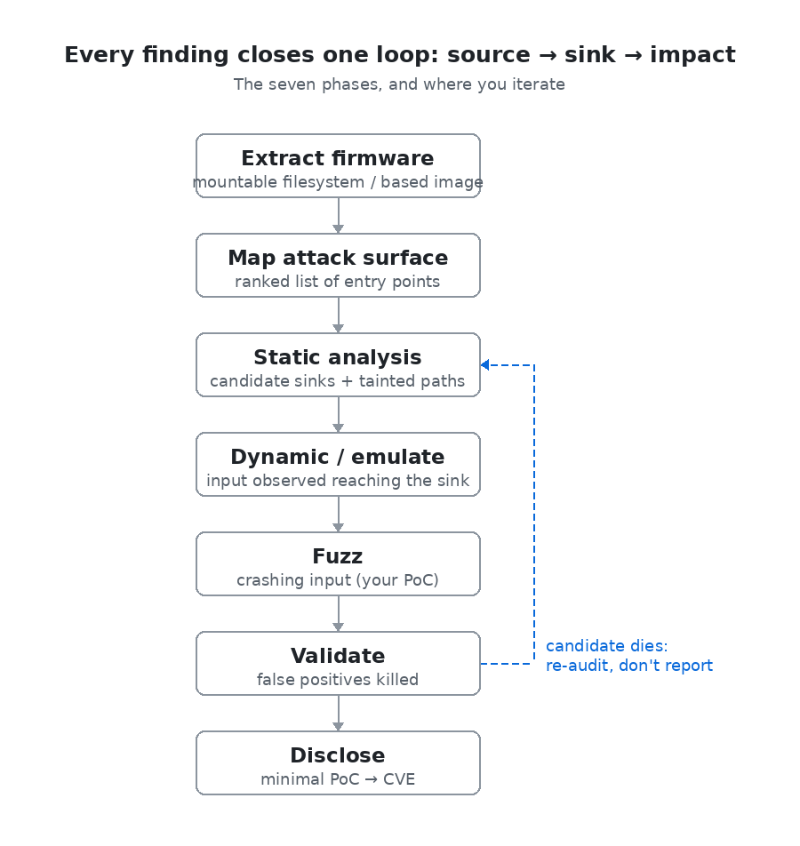
The three middle phases are a loop, not a line: a candidate that dies in validation sends you back to static analysis to find the next one, not to a report.
Foundations to build first
These are the things that, when you don't know them, quietly stop you. Learn them roughly in this order, and deepen the ones your targets actually use. Each one below comes with a command you can run and the output to expect.
1. C and C++ at the memory level
The object model (struct layout and padding, integer wrap-around, pointers) matters because almost every memory-corruption bug is a C mistake you have to recognise in the decompiler.
Struct layout is rarely what you would guess:
struct packet { uint8_t type; uint32_t length; uint8_t flag; };
printf("%zu", sizeof(struct packet));sizeof(struct packet) = 12
offset type=0 length=4 flag=8Three fields totalling 6 bytes occupy 12, because the compiler pads so length lands on a 4-byte boundary. Parse a binary struct without accounting for padding and every field after it is misread.
Integer wrap is a whole bug class in one line:
uint16_t total = count * 8; /* count comes from a packet header */
char *buf = malloc(total); /* then count*8 bytes get written in */count=10000 requested total=80000 bytes -> malloc(14464)80000 does not fit in 16 bits, so total wraps to 14464. The allocation is too small and the write overruns the heap.
2. CPU architecture and assembly
Enough ARM/MIPS/x86 to read a disassembly and trust or distrust the decompiler: registers, the calling convention, where the return address lives, endianness. With no source, this listing is your source.
# vuln.c: strcpy(local_buf[64], input) -- no bounds check
mips-linux-gnu-gcc -c -O1 -fno-stack-protector vuln.c -o vuln.o
mips-linux-gnu-objdump -d vuln.o00000000 <handle_request>:
0: addiu sp,sp,-96
4: sw ra,92(sp) # saved return address at sp+92
18: li a2,64 # strcpy size arg = 64
20: addiu s0,sp,24 # local_buf is at sp+24
2c: jalr t9 # call strcpy
4c: lw ra,92(sp) # restore return address
54: jr raThe buffer starts at sp+24 and the saved return address sits at sp+92, 68 bytes apart. Write 69+ bytes through that unbounded copy and you control ra, the address the function returns to. That distance, read straight off the frame, is the exploit primitive.
3. The ELF format and the loader
Sections vs segments, the symbol table, PLT/GOT, dynamic linking, and the mitigation flags: this is what every tool parses, and it explains a wrong load base or a function that decodes to garbage.
file elfdemo
readelf -h elfdemo # ELF header
readelf -d elfdemo # dynamic sectionelfdemo: ELF 64-bit LSB pie executable, x86-64, dynamically linked, not stripped
Class: ELF64 Data: little endian Type: DYN (PIE) Machine: x86-64
Entry point address: 0x1060
(NEEDED) Shared library: [libc.so.6]
(FLAGS) BIND_NOWBit-width, endianness and machine are exactly the settings you feed the disassembler, and if one is wrong nothing resolves. NEEDED lists the libraries the binary trusts; the flags reveal its hardening.
4. How firmware is built and laid out
Bootloader, kernel, root filesystem, flash partitions, and the split between a full Linux userland and a monolithic RTOS blob. The layout is what you carve, and the target class decides the whole approach. This is the scan binwalk performs: magic signatures plus an entropy map.
binwalk firmware.bin # signature scan
binwalk -E firmware.bin # entropy mapDECIMAL HEX DESCRIPTION
0 0x0 U-Boot bootloader string
65 0x41 gzip compressed data
145 0x91 SquashFS filesystem (little-endian)
OFFSET ENTROPY READING
0x0 7.14 structure / strings
0x200 7.6 high -- compressed or encrypted
0x1000 5.59 structure / stringsThe signature offsets tell you where each embedded object begins, so carve from there. A region at near-maximal entropy end to end is compressed or encrypted; if the whole image looks like that, you are facing encryption rather than a parser (Phase 1 says what to do next).
Don't try to master all of these before starting. Learn the first three well, start hunting, and let the targets pull you into the rest.
Phase 1: Acquiring and extracting firmware
You can't analyze what you can't unpack. Get the image, then peel it apart.
Getting the image, easiest first:
- Vendor download page or support portal: free, legal, and the first stop. GPL-mandated source drops sometimes ship alongside and are gold.
- OTA update capture: sniff the device fetching its own update, or pull the URL from the app or binary.
- Extract from the app: mobile companion apps often embed firmware or the update endpoint and keys.
- Hardware dump when there's no software route: read the SPI/NAND flash chip directly with a programmer (a CH341A clip for SOIC, or desolder), or get a shell/memory dump over the UART console (look for the header on the PCB) or JTAG/SWD. This is the fallback for locked-down devices and where a lot of original research starts.
Unpacking:
binwalkis the default first pass: it signature-scans the blob and finds embedded filesystems, kernels, and compression.binwalk -eextracts;-Merecurses.unblobis the stronger modern extractor (better format coverage, cleaner recursion). Reach for it when binwalk chokes.- Know the filesystem types you'll hit: SquashFS (most common, read-only root), JFFS2 / UBIFS (raw NAND, need the right endianness and erase-block size), CramFS, ext2/4, and plain CPIO/ramdisks. If a mount fails, the parameters are usually wrong, not the image.
When extraction fails, diagnose before brute-forcing:
- High, flat entropy across the whole image (
binwalk -E) means encrypted or compressed with no header. Encrypted update images are increasingly common. - Look for the decryption path in the bootloader or a prior firmware version that shipped unencrypted. Vendors often add encryption in a later release, leaving the key or algorithm recoverable from the transition.
- A partial extraction (kernel found, filesystem is a blob) often means a custom or obfuscated container, so check for known vendor tooling or reverse the header format.
Goal of this phase: a mounted, browsable root filesystem (or, for RTOS blobs, a correctly based image loaded in your disassembler). Everything after assumes you have that.
Worked example: unpacking a real image
The same three steps against a firmware.bin built for this walkthrough (a U-Boot region, a uImage-wrapped gzip kernel, and a SquashFS root). The output is real binwalk.
1. Signature scan. binwalk walks the image matching magic bytes, so every embedded object and its offset falls out:
binwalk firmware.bin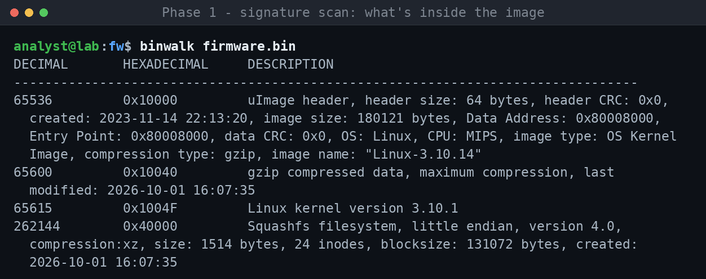
A uImage header, then a gzip kernel, then SquashFS, each with a byte offset. Those offsets are where you carve. The kernel is flagged MIPS, matching what file said about the userland binaries.
2. Entropy map. Before extracting, check whether anything is encrypted:
binwalk -E firmware.bin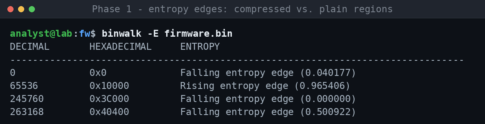
The rising edge at 0x10000 is the compressed kernel; everything else sits low. A region pinned near 1.0 end-to-end would mean encryption, but here nothing is, so extraction will work.
3. Extract. -e carves each detected object and unpacks the filesystem:
binwalk -e firmware.bin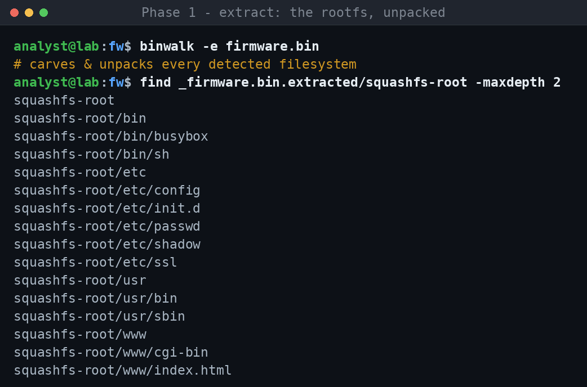
The SquashFS unpacks to squashfs-root/, the exact tree Phase 2 then enumerates. You've gone from an opaque blob to a browsable root filesystem.
Phase 2: Reconnaissance and attack-surface mapping
Now inventory the filesystem and decide where to spend your attention. Most of a firmware image is benign; the bugs live in a small number of privileged, reachable, input-handling components.
Enumerate:
- Services and daemons: the web server (lighttpd, uhttpd, boa, or a custom bmcweb-style stack) and its CGI/handler binaries, network listeners, and anything in init scripts (
/etc/init.d,/etc/rc*, systemd units) that starts at boot. - The web root: CGI scripts,
.cgi/.lua/PHP, and the native binaries they call. Router and camera web UIs are a classic source of command injection. - Custom native binaries in
/usr/bin,/usr/sbin,/bin. The vendor's own binaries (not stock BusyBox) are where the interesting bugs are; stock components are already well-audited upstream. - setuid/setgid binaries: run
find . -perm -4000in the extracted root. Anything setuid-root that takes input is a local-privesc candidate. - Secrets: hardcoded credentials, API keys, private keys, TLS certs. Grep the filesystem:
grep -rIn -- 'password\|passwd\|BEGIN.*PRIVATE KEY\|api_key'. These are trivially valid findings on their own. - Config and its parsers: files a privileged process reads and trusts. A config-injection bug lives here, where something writes attacker-influenced data into a config file that another component parses and acts on.
Worked example: recon on an extracted root
Here is that workflow run for real against a deliberately-built sample root filesystem (squashfs-root/, a stand-in for a typical MIPS camera/router image). The commands are exactly what you would type; each screenshot is its actual output.
1. Identify architecture and endianness. Before any disassembly you must know what you're loading. file on the vendor binaries settles it:
file bin/busybox usr/sbin/httpd usr/bin/cli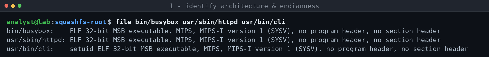
MIPS, MSB (big-endian), so Ghidra/IDA must be set to MIPS big-endian or every instruction decodes to garbage. Note usr/bin/cli is already flagged setuid.
2. Hunt setuid / setgid binaries. These are the local privilege-escalation surface:
find . -perm -4000 -o -perm -2000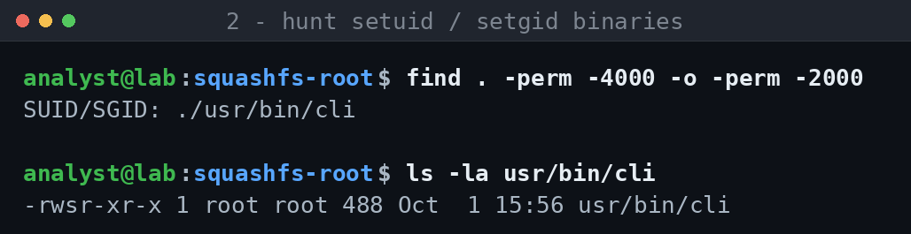
A custom, setuid-root binary (-rwsr-xr-x, owner root) that isn't stock BusyBox is exactly the kind of local-privesc target worth reversing.
3. Hunt hardcoded secrets. One grep across the config tree often yields valid findings on its own:
grep -rInE 'password|api_key|BEGIN [A-Z]+ PRIVATE KEY' etc/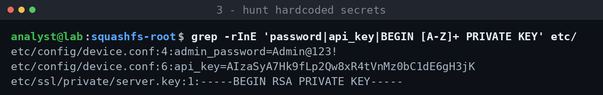
A hardcoded admin password, a live API key, and a private key shipped inside the image, each reportable without touching a single instruction.
4. Trace untrusted input into a shell. In the web CGIs, grep for the source (request data) and the command sink in one pass:
grep -rnE 'QUERY_STRING|ping -c|FW=$1|cp $FW' www/cgi-bin/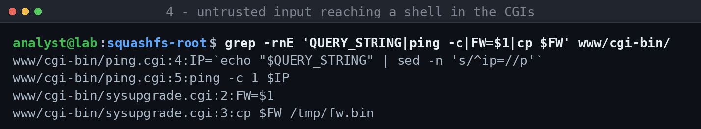
$QUERY_STRING feeds $IP, which lands in ping -c 1 $IP with no sanitization. That is textbook command injection (a request like ?ip=1.1.1.1;telnetd runs both). sysupgrade.cgi passes its argument straight into cp.
5. Pull command templates from a stripped binary. Even with no source, strings exposes the shape of what a binary does:
strings -n 6 usr/sbin/httpd usr/bin/cli | grep -E '%s|/bin/sh|system|cp '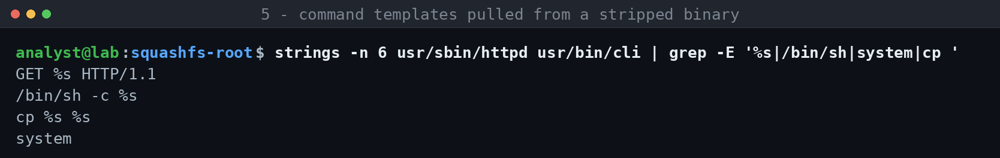
/bin/sh -c %s and cp %s %s sitting next to a system import are strong leads: in Ghidra, find the cross-references to these format strings and check whether any %s is attacker-controlled.
Everything above is reconnaissance only. None of it is a confirmed bug yet; it's the ranked lead list you carry into static analysis (Phase 3).
Then rank. Score each candidate on three axes and start at the top:
| Axis | High-priority looks like |
|---|---|
| Privilege | Runs as root / setuid; touches auth, update, or the network stack |
| Reachability | Pre-auth network input, or triggerable by a low-priv user |
| Input complexity | Parses length-prefixed, nested, or string-formatted data (parsers break) |
A pre-auth, root-running, custom binary that parses network input is where you look first. A local, unprivileged helper that reads a fixed config is where you look last. This ranking is the single highest-leverage decision in the whole process. It's why disciplined researchers find bugs and blind grepping finds noise.
Phase 3: Static binary analysis
When there's no source, the decompiler is your source. This is the same source-to-sink hunt as auditing C, done one abstraction layer down. Ghidra (free, scriptable, great decompiler) is the default; IDA Pro and Binary Ninja are worth it if you can afford them (better analysis, cleaner UI, strong APIs).
1. Load it correctly. Half of "the decompiler is useless" is a wrong load. Set the exact architecture, bit-width, and endianness (MIPS firmware is often big-endian, so getting this wrong turns every instruction into garbage). For a raw RTOS blob with no ELF header, you must find and set the load base so pointers and cross-references resolve; look for the base in the bootloader, in a memory map, or by aligning string references. Load the right processor variant (ARM vs. Thumb matters).
2. Orient before you dig.
- Strings: the fastest orientation there is. Error messages, format strings, paths, command templates, and config keys tell you what the binary does and often point straight at the vulnerable function. A string like
"/bin/sh -c %s"or"cp %s %s"is a command-injection lead before you've read any code. - Imports / PLT: which dangerous libc functions does it call?
system,popen,exec*,strcpy,sprintf,memcpy,printf-family. Cross-reference each import to every call site. This is the binary-level version of grepping for sinks. - Entry points:
main, the request dispatcher, therecv/acceptloop, the D-Bus/IPC method table. These are your sources.
3. Trace source to sink. Pick a dangerous call site (sink). Walk its arguments backward: where does the tainted buffer come from? Follow cross-references up the call graph until you reach an entry point that takes attacker input, or hit a bounds check or sanitizer that kills it. Do the same forward from sources when the surface is small. Ghidra's decompiler and xref graph, or Binary Ninja's, make this tractable; rename variables and retype structs as you learn them so the decompilation gets readable. This backward-from-sink walk is the core skill, and most of your hours go here.
4. Read the decompiler critically. Decompilers lie: wrong function signatures, missed cross-references, misidentified types, phantom variables. When something looks impossible, drop to the disassembly and check the actual registers and stack offsets. Fix signatures and calling conventions so arguments line up.
5. Diff for shortcuts, which is very high yield:
- Patch diffing: BinDiff or Ghidra's Version Tracking against a newer firmware release surfaces exactly what the vendor silently changed. A changed bounds check or added length validation is a patched bug. Then confirm whether the shipped or older version you're targeting is still vulnerable, or whether the fix is incomplete and the n-day is still exploitable.
- Upstream diffing: if the binary is a fork of an open-source component, diff against upstream. Vendors re-introduce fixed bugs and bolt on sloppy glue code around clean libraries.
Output of this phase is a list of candidate sinks with a plausible tainted path to each. None of them are bugs yet; the next two phases decide that.
Worked example: finding the sink in a binary
These are the command-line parts of static analysis you can show as output; the Ghidra decompiler is a GUI, but the same source-to-sink reasoning drives it. The target fw_httpd is a small vulnerable service compiled for this walkthrough. It's shown as x86-64 for clarity, but the method is identical on a MIPS/ARM firmware binary; you just set the architecture.
1. Which dangerous functions does it import? The binary-level equivalent of grepping for sinks:
objdump -T fw_httpd | grep -E 'system|strcpy|sprintf|popen|gets'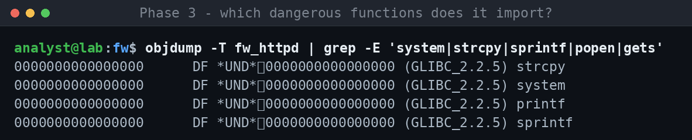
strcpy, sprintf and system are all imported: an unbounded copy, a format-into-buffer, and a shell. That's the shortlist of call sites to examine.
2. Trace source to sink in the disassembly. Load it in radare2, analyze, and print the function:
r2 -A fw_httpd # then at the prompt: pdf @ sym.handle_ping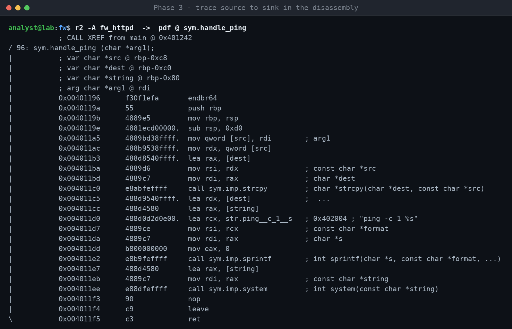
The whole bug is on screen: arg1 goes through strcpy into a fixed buffer (overflow), then sprintf with "ping -c 1 %s", then system (command injection). Both the tainted argument and the two sinks are visible, exactly what you'd confirm in Ghidra's decompiler by walking backward from the system call.
3. Patch diff. Given a later, fixed build, radiff2 scores every function and shows what moved:
radiff2 -C fw_httpd fw_httpd_patched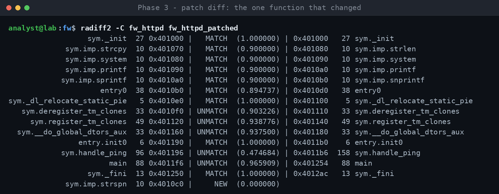
Every function matches at 1.0 except handle_ping (0.47, and it grew from 96 to 158 bytes), and strspn shows up as NEW, the validation the vendor added. On a real target, that one changed function is exactly where you'd focus a 1-day analysis.
Phase 4: Dynamic analysis and emulation
A static candidate is a hypothesis. Running the code confirms it, and running firmware off its hardware is the hard, distinctive skill of this field.
Emulation, in order of increasing pain:
- QEMU user-mode (
qemu-arm,qemu-mips) runs a single cross-arch binary on your host, using the extracted filesystem as its root (chroot+qemu-*-static). Perfect for exercising one daemon or CGI handler in isolation. Fastest path to a running target. - QEMU system-mode boots the whole kernel and filesystem when the binary depends on
/proc,/dev, NVRAM, kernel modules, or hardware peripherals that user-mode can't fake. - FirmAE (and its ancestor Firmadyne) automate full-system emulation of Linux router/IoT images, with heuristics to get the network stack up so you can hit the web interface. Try FirmAE early for consumer Linux firmware. When it works, you save days.
- Hardware in the loop: when emulation is hopeless (missing peripherals, anti-emulation, custom SoC), debug on the real device over UART/JTAG. Slower, but ground truth.
Peripheral stubbing is the recurring blocker: the binary reads a hardware register or a missing NVRAM key and exits. You stub these (fake the NVRAM library, LD_PRELOAD a shim, or patch the check out) until the code path you care about runs.
Debugging:
gdb-multiarchwithgdbserverrunning inside the emulated/real target; pwndbg or GEF make it usable (heap view, registers, telescoping).- Set a breakpoint at your candidate sink, send input at the entry point, and watch whether your data arrives tainted and in the shape you predicted. That's the moment a hypothesis becomes a bug.
- Watchpoints on a buffer catch the overflowing write; examine the stack/registers at the crash to gauge control.
The goal here is a controlled trigger: you send input at a real source and observe it reaching the sink. Do that and you've proven reachability, the hardest half of validity.
Phase 5: Fuzzing
Fuzzing finds the bugs you'd never spot by reading, and produces a crashing input that is your PoC. It shines on parsers, anything that eats structured, attacker-shaped data.
Pick the right target. A self-contained parser with a clear input buffer: the config/protocol/file-format parser you flagged in static analysis. The more the function looks like "bytes in, structure out," the better it fuzzes.
Harnessing, easiest first:
- Source available: libFuzzer or AFL++ with a native harness. Write a small
LLVMFuzzerTestOneInput(or AFL loop) that feeds bytes straight into the target function, compile with ASan/UBSan/MSan, and let it run. Sanitizers turn silent corruption into a clean, diagnosable crash, which is the single biggest multiplier on bug quality. - Binary only: AFL++ QEMU mode (
-Q) instruments the closed-source binary for coverage-guided fuzzing without source. Slower and fiddlier, but it's how you fuzz firmware binaries. Persistent mode around the single target function is far faster than re-exec per input. - Whole-service fuzzing over the network (e.g. boofuzz) when you can't isolate a function: lower coverage, but catches protocol-state bugs.
Make it effective:
- Seed corpus: real, valid inputs (captured packets, sample config/media files). Good seeds are the difference between finding bugs in an hour and never.
- Coverage-guided beats blind every time you can get instrumentation; watch coverage plateau to know when to improve seeds or harness.
- Dictionaries of the format's keywords/magic bytes help the fuzzer past structural checks.
Triage every crash, because a crash is not yet a bug. Reproduce it, minimize the input (afl-tmin), read the ASan report to classify it (stack overflow, heap OOB, UAF, null-deref), and confirm the input is attacker-reachable through a real source, not just a value your harness fed directly past the front-end checks. A crash only in the harness, unreachable in the real service, is a false positive.
Vulnerability classes to recognize
These are the patterns that recur in firmware. Train your eye to recognize each one's tell, the code or decompiler signature that says "look harder here."
| Class | The tell to look for | Typical impact |
|---|---|---|
| Command injection | Input concatenated into system/popen/exec or a "... %s" shell template; unescaped params in CGI | RCE, often pre-auth |
| Stack buffer overflow | strcpy/strcat/sprintf/gets, or a copy loop with no bound, into a fixed stack buffer | RCE / crash; control of return address |
| Heap overflow / UAF | malloc then over-copy; free-then-use; double free; dangling pointer after realloc | RCE / crash; harder to weaponize |
| Integer overflow into undersized alloc | malloc(a * b) or len + n where the size can wrap, then a write sized by the original | Heap overflow downstream |
| Format string | printf-family where the format arg is attacker-controlled, not a literal | Info leak / write / crash |
| Path traversal | ../ in a path built from input reaching fopen/open/file APIs | Arbitrary file read/write |
| Auth bypass / hardcoded creds | Backdoor accounts, static keys, weak/decidable session tokens, logic that skips a check | Full unauth access |
| Insecure update / signature bypass | Update image not verified, verification you can skip, downgrade allowed, key recoverable | Persistent RCE via malicious firmware |
| Config / file injection | Attacker data written into a file a privileged component later parses and trusts | Privesc / RCE via the downstream parser |
| Deserialization / parser bugs | Length-prefixed or nested formats off the wire; XML/JSON/protobuf/custom TLV | Corruption or logic abuse |
| SSRF / info disclosure | Server fetches a URL from input; verbose errors; secrets in responses | Pivot / leak |
Command injection, memory corruption, and unverified update are the three that most reliably clear the bar for a serious, CVE-worthy finding. Config-injection and SSRF-style bugs are very real but need a tighter impact argument to land.
From candidate to valid bug
This phase is what makes a finding valid rather than interesting. Most static candidates die here, and that's the point: killing your own false positives before you report them is what earns credibility with a maintainer or CNA.
Run every candidate through these kill-checks:
- Is it in the shipped build?
#ifdefs, build flags, and dead code mean the vulnerable path may not compile into what ships. Confirm the code is actually present and reachable in the released image. - Is the input really unbounded? A caller two frames up may already validate length or charset. Trace the whole path, not just the sink's immediate neighborhood.
- Does the attacker already have what the bug grants? A "root RCE" that requires you to already be root/authenticated-admin is usually not a vulnerability; it's the intended privilege. Be honest about the pre-conditions.
- Is there a real trust boundary crossed? Input reaching a dangerous op is only a bug if the input source is less trusted than the sink's context. No boundary, no bug.
- Is it reachable in a default/common config? A bug behind a disabled-by-default feature is real but lower severity; note the condition.
Then prove it. A minimal, reliable PoC is non-negotiable: the exact input, the exact preconditions, and the observed effect (crash with controlled registers, command executed, file read). Reproduce it clean from a known state. For memory bugs, an ASan trace or a controlled crash is strong evidence; you don't always need a full weaponized exploit, but you must demonstrate the primitive.
Assess impact honestly. Score it with CVSS, but let the actual primitive and preconditions drive the vector: pre-auth vs. post-auth, network vs. local, and what the attacker gains. Overclaiming severity is the fastest way to lose a maintainer's trust; underclaiming buries a real bug.
Disclose responsibly. Find the security contact (SECURITY.md, security@, a bug-bounty or PSIRT program). Send a clear report: affected version(s), preconditions, reproduction steps, PoC, impact, and a suggested fix. Agree on a disclosure timeline, get the fix confirmed, and request a CVE (via the vendor's CNA or MITRE). It's the same disclosure pipeline you'd run against a web app, applied to firmware. Keep the written record of every report; it's the most credible evidence of your work.
Toolchain reference
| Stage | Tool | What it's for |
|---|---|---|
| Extraction | binwalk | Signature-scan and carve embedded filesystems/kernels |
| Extraction | unblob | Stronger modern extractor; better format coverage and recursion |
| Extraction | firmware-mod-kit, sasquatch | Handle awkward/patched SquashFS variants |
| Hardware | flashrom + CH341A, UART/JTAG | Dump flash chips; get console/debug access on-device |
| Static | Ghidra | Free disassembler + decompiler; scriptable, multi-arch |
| Static | IDA Pro / Binary Ninja | Commercial; stronger analysis, cleaner APIs |
| Static | BinDiff, Ghidra Version Tracking | Patch-diff two builds to find silently-fixed bugs |
| Static | Semgrep | Fast pattern-level sink search (when source is available) |
| Static | CodeQL, Joern | Query taint/data-flow across a codebase as a database |
| Static | cscope / ctags / clangd | Jump the call graph while reading source |
| Dynamic | QEMU (user + system) | Run cross-arch binaries / boot full images |
| Dynamic | FirmAE, Firmadyne | Automated full-system emulation of Linux IoT/router firmware |
| Dynamic | gdb-multiarch + gdbserver, pwndbg/GEF | Cross-arch debugging with a usable exploit-dev UI |
| Fuzzing | AFL++ | Coverage-guided fuzzing; QEMU mode for binaries, persistent mode for speed |
| Fuzzing | libFuzzer + ASan/UBSan/MSan | In-process fuzzing with source; sanitizers for clean crash diagnosis |
| Fuzzing | boofuzz | Network/protocol fuzzing of a whole service |
| Fuzzing | afl-tmin, afl-cmin | Minimize crashing inputs and corpora |
| Recon | strings, grep, file, binwalk -E | Orientation, secret-hunting, entropy/encryption check |
Don't install all of this on day one. Ghidra, binwalk, QEMU, and gdb-multiarch are a complete starter kit; add fuzzing and diffing tools as your targets demand them.
A deliberate learning path
Skill here compounds from deliberate reps on progressively harder targets. A rough progression:
- Get fluent in the primitives: binary exploitation and RE basics on curated challenges before touching real firmware, so the phases above aren't fighting you on fundamentals at the same time as an unknown target.
- Emulate one known-vulnerable image end-to-end: extract it, get it running under FirmAE/QEMU, and reproduce a published CVE against it. Doing the whole pipeline once for a bug you know exists teaches more than ten blind hunts.
- Audit soft targets for real: small open-source router/IoT/camera firmware, or a single custom daemon. Diff a version bump and chase what changed.
- Move to a specialist class: BMC/firmware/systems targets (OpenBMC, access-control and camera devices). Bring the diff-and-fuzz discipline to the custom binaries.
Deliberate-practice resources:
- pwn.college: structured, free, rigorous, with graded challenges across RE and memory corruption. The best single starting point.
- Nightmare and ROP Emporium: focused binary-exploitation courses and challenges.
- HackTheBox and picoCTF: lean into the pwn and RE tracks.
- Azeria Labs: the reference for learning ARM assembly and exploitation.
Books and long-form:
- Practical IoT Hacking (Chantzis et al.): the closest thing to a firmware-research textbook, covering the whole pipeline.
- The IoT Hacker's Handbook (Gupta): hardware, UART/JTAG, firmware.
- The Ghidra Book (Eagle & Nance): deep Ghidra, including scripting.
- Hacking: The Art of Exploitation and A Guide to Kernel Exploitation: foundations and depth.
- The OWASP Firmware Security Testing Methodology (FSTM): a clean checklist to cross-check your process against.
Stay current by reading disclosure write-ups: vendor advisories, the researchers whose pipelines you model, and conference talks (Black Hat, DEF CON, Recon firmware tracks). Reading how a specific bug was found, from image to CVE, is the highest-signal learning once you know the basics.
The throughline: you learn firmware research by finishing the loop on real targets, not by studying it. Every completed disclosure teaches more than the last.
The sample binaries and firmware image in the worked examples were built specifically for this walkthrough to demonstrate tooling and method. This article describes methodology, not a turnkey exploit against any specific product.